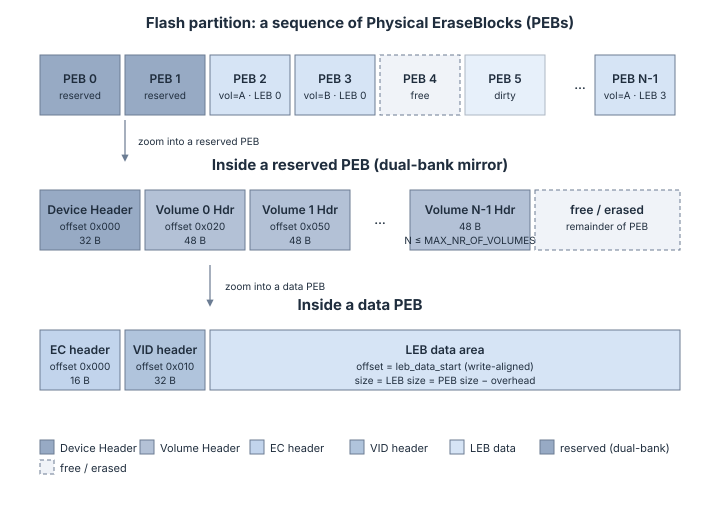
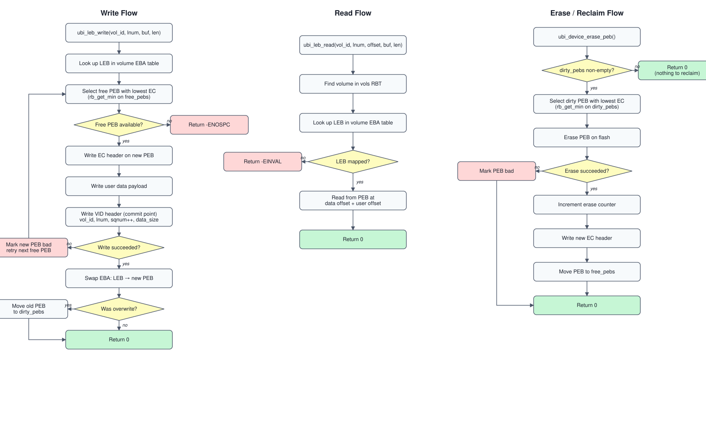

Architecture Guide¶
What this page covers: UBI internals — on-flash layout, in-RAM data structures, initialization, wear-leveling, dual-bank metadata redundancy, recovery, and failure handling.
Prerequisites: Read What is UBI? and Concepts at a Glance first for the mental model (PEB, LEB, EC, VID, EBA).
What you will learn: How UBI maps logical blocks to physical blocks, how it recovers from crashes, and how wear is distributed across the flash.
30-Second Summary¶
UBI divides a flash partition into Physical Erase Blocks (PEBs). The first N PEBs (configurable, default 2) store mirrored device and volume metadata. All remaining PEBs hold user data. Each data PEB carries an Erase Counter (EC) header and a Volume Identifier (VID) header followed by the payload. At init, UBI scans every PEB and builds an in-RAM red-black tree cache of free, dirty, and bad blocks plus per-volume LEB-to-PEB mappings. Writes always pick the free PEB with the lowest erase count (wear-leveling). Crash recovery relies on monotonically increasing sequence numbers in VID headers — the higher sqnum always wins.
Core Invariants¶
These rules hold at all times after a successful ubi_device_init():
Invariant |
Description |
|---|---|
One LEB, one PEB |
Each mapped LEB points to exactly one active PEB. No two LEBs share a PEB. |
Higher sqnum wins |
During init, if two PEBs claim the same (volume_id, lnum), the one with the higher |
Erase before reuse |
A dirty PEB must be erased before it can return to the free pool. No in-place overwrites. |
Bad PEBs are terminal |
Once a PEB is classified as bad, it never returns to the free or dirty pool (unless torture recovery succeeds). |
Reserved PEBs are mirrors |
The first N reserved PEBs hold identical copies of device + volume metadata. They are never used for data. |
Free pool is EC-ordered |
|
Mutex serialization |
All public API calls acquire a per-device mutex. UBI is thread-safe but not ISR-safe. |
Secure extension: For authenticated encryption of all on-flash structures, see the Secure Architecture: Overview (developer-targeted) and the Secure On-Flash Format Specification (normative byte-level reference).
Flash Storage Primer¶
Raw flash memory (NAND or NOR) differs from block devices like SD cards or eMMC in several important ways:
Erase before write — a flash cell must be erased before it can be written. Erasing sets all bytes to the hardware-defined erased value (typically
0xFFfor NOR flash, but this may differ on other technologies).Erase granularity — erasure operates on large blocks (erase blocks), typically 4 KB to 256 KB.
Write granularity — writes operate on smaller units (write blocks), typically 1 to 16 bytes.
Limited endurance — each erase block supports a finite number of erase cycles (typically 10,000 to 100,000) before it becomes unreliable.
Bad blocks — blocks can fail at any point during the device lifetime.
Without wear-leveling, repeatedly writing to the same logical location would exhaust a small set of physical blocks while the rest remain unused. UBI solves this by dynamically remapping logical blocks to physical blocks, always choosing the least-worn block for new writes.
Key terminology:
Term |
Meaning |
|---|---|
PEB |
Physical Erase Block — a hardware erase unit on the flash chip |
LEB |
Logical Erase Block — a virtual block exposed to the application |
EC |
Erase Counter — tracks how many times a PEB has been erased |
VID |
Volume Identifier — metadata linking a PEB to a volume and LEB |
EBA |
Erase Block Association — the mapping table from LEBs to PEBs |
Architecture Overview¶
+-----------------------------------------------------+
| Application |
+-----------------------------------------------------+
| ^
| ubi_leb_write() | ubi_leb_read()
| ubi_volume_create() | ubi_volume_get_info()
| ubi_device_init() | ubi_device_get_info()
v |
+-----------------------------------------------------+
| UBI Layer |
| |
| +---------------+ +---------------+ +---------+ |
| | Volume Mgmt | | LEB I/O | | Wear- | |
| | create/remove | | read/write | | Level | |
| | resize/info | | map/unmap | | Engine | |
| +---------------+ +---------------+ +---------+ |
| |
| +----------------------------------------------+ |
| | PEB Management (RBT Cache) | |
| | free_pebs | dirty_pebs | bad_pebs | vols | |
| +----------------------------------------------+ |
+-----------------------------------------------------+
| ^
| flash_area_write() | flash_area_read()
| flash_area_erase() |
v |
+-----------------------------------------------------+
| Zephyr Flash Area API (Flash Map) |
+-----------------------------------------------------+
| ^
v |
+-----------------------------------------------------+
| Flash Hardware (NOR / NAND) |
+-----------------------------------------------------+
On-Flash Layout¶
UBI reserves the first N PEBs for device and volume metadata, stored in a dual-bank configuration for crash resilience. N is configurable via CONFIG_UBI_DEV_HDR_NR_OF_RES_PEBS (default 2, range 2–4). The remaining PEBs (N through total-1) are data blocks available for volume use.
{kind=link}

The diagram above is the high-level view. The detailed byte layout of the reserved PEBs (which the SVG glosses over) is:
Reserved PEB Layout (reserved PEBs are mirrors):
Offset 0x000 +----------------------+
| Device Header (32 B) | magic, version, revision, vol_count, CRC
+----------------------+
Offset 0x020 | Volume 0 Hdr (48 B) | magic, vol_id, name, type, leb_count, CRC
+----------------------+
Offset 0x050 | Volume 1 Hdr (48 B) |
+----------------------+
| ... | (up to CONFIG_UBI_MAX_NR_OF_VOLUMES)
+----------------------+
A data PEB starts with a 16-byte EC header at offset 0 (magic, version, erase_counter, CRC), followed by a 32-byte VID header at offset 0x010 (magic, volume_id, lnum, vid_sqnum, data_size, CRC), followed by the user-data area. When a data PEB is free (not assigned to any volume), its VID header area is erased (filled with the hardware-reported erased byte value). The EC header is always present on valid PEBs.
Header Structures¶
All headers are aligned to 16 bytes and protected by CRC-32/IEEE (crc32_ieee() from Zephyr’s <zephyr/sys/crc.h>). The CRC covers all fields except the hdr_crc field itself.
Erase Counter (EC) Header — 16 bytes¶
Present on every data PEB. Tracks how many times this block has been erased.
Offset Size Field
------ ---- -----
0x00 4 magic (0x55424923)
0x04 1 version (1)
0x05 3 padding
0x08 4 ec erase counter value
0x0C 4 hdr_crc CRC-32 of bytes 0x00..0x0B
Volume Identifier (VID) Header — 32 bytes¶
Present on data PEBs that are mapped to a volume. Links a PEB to a specific volume and LEB.
Offset Size Field
------ ---- -----
0x00 4 magic (0x55424921)
0x04 1 version (1)
0x05 3 padding
0x08 4 lnum logical erase block number within the volume
0x0C 4 vol_id volume identifier
0x10 8 sqnum global sequence number (monotonically increasing)
0x18 4 data_size size of user data in bytes
0x1C 4 hdr_crc CRC-32 of bytes 0x00..0x1B
The vid_sqnum field is critical for crash recovery. During the PEB scan at init, if two PEBs claim the same (volume_id, lnum) pair, the one with the higher vid_sqnum wins.
Device Header — 32 bytes¶
Stored on all reserved PEBs (default: PEB 0 and PEB 1). Describes the overall UBI device.
Offset Size Field
------ ---- -----
0x00 4 magic (0x55424925)
0x04 1 version (1)
0x05 3 padding
0x08 4 offset offset of the first volume header
0x0C 4 size device size
0x10 4 revision header revision counter (incremented on each metadata update)
0x14 4 vol_count number of volumes
0x18 4 vol_id_watermark monotonic volume ID counter (never reused)
0x1C 4 hdr_crc CRC-32 of bytes 0x00..0x1B
Volume Header — 48 bytes¶
One per volume, stored sequentially after the device header on the reserved PEBs.
Offset Size Field
------ ---- -----
0x00 4 magic (0x55424926)
0x04 1 version (1)
0x05 1 vol_type 0 = static, 1 = dynamic
0x06 2 padding
0x08 4 vol_id unique volume identifier
0x0C 4 leb_count number of LEBs allocated to this volume
0x10 12 padding
0x1C 16 name null-terminated volume name (max 16 bytes including '\0')
0x2C 4 hdr_crc CRC-32 of bytes 0x00..0x2B
In-RAM Data Structures¶
When ubi_device_init() runs, it scans the flash and builds an in-RAM cache of PEB states. This cache is the heart of UBI — all runtime decisions (which PEB to write to, which blocks are dirty, etc.) are made from these structures without re-reading flash.
Overview¶
struct ubi_device (128 B)
|
|-- mutex Zephyr mutex for thread safety
|-- flash Flash partition config (partition_id, block sizes)
|
|-- free_pebs (Red-Black Tree, keyed by erase counter)
| |
| | Holds PEBs that are erased and available for new writes.
| | The minimum node (lowest EC) is selected for writes (wear-leveling).
| |
| | ec:3 Nodes are struct ubi_rbt_item {
| | / \ .key = erase_counter,
| | ec:1 ec:7 .value.pnum = PEB index
| | / \ }
| | ec:5 ec:12
| |
| `-- Each node points to a physical PEB on flash:
| ec:1 --> PEB 5 [EC hdr: ec=1 | VID: 0xFF (empty) | ...]
| ec:3 --> PEB 8 [EC hdr: ec=3 | VID: 0xFF (empty) | ...]
| ec:5 --> PEB 14 [EC hdr: ec=5 | VID: 0xFF (empty) | ...]
|
|-- dirty_pebs (Red-Black Tree, keyed by erase counter)
| |
| | Holds PEBs that contain stale data and need erasure before reuse.
| | Populated when a LEB is overwritten or unmapped.
| |
| | ec:4
| | / \
| | ec:2 ec:9
| |
| `-- Each node points to a PEB with outdated data:
| ec:2 --> PEB 3 [EC hdr: ec=2 | VID: old data | ...]
| ec:4 --> PEB 11 [EC hdr: ec=4 | VID: old data | ...]
|
|-- bad_pebs (Singly-Linked List)
| |
| | Holds PEBs with I/O errors (invalid EC headers, failed erases/writes).
| | Entries are struct ubi_list_item { .pnum, .erase_count }
| |
| `-- [PEB 22, ec:~7] --> [PEB 45, ec:~3] --> NULL
|
| NOTE: Bad block list is NOT persisted to flash.
| It is lost on reboot and rebuilt during the next init scan.
|
|-- vols (Red-Black Tree, keyed by volume ID)
| |
| | Maps volume IDs to struct ubi_volume pointers.
| |
| | vol_id:0 Nodes are struct ubi_rbt_item {
| | / \ .key = volume_id,
| | vol_id:1 vol_id:5 .value.vol = &ubi_volume
| | }
| |
| `-- Each ubi_volume (44 B) contains:
|
| struct ubi_volume
| |-- vol_id Unique volume identifier
| |-- cfg { name[16], type (static|dynamic), leb_count }
| |-- eba_tbl_count Number of mapped LEBs
| `-- eba_tbl (Red-Black Tree, keyed by LEB number)
| |
| | Per-volume mapping from logical to physical blocks.
| |
| | leb:2 Nodes are struct ubi_rbt_item {
| | / \ .key = LEB_number,
| | leb:0 leb:5 .value.pnum = PEB_index
| | }
| |
| `-- Each node points to the PEB holding that LEB's data:
| leb:0 --> PEB 7 [EC hdr | VID: vol=0,leb=0,sq=42 | payload]
| leb:2 --> PEB 19 [EC hdr | VID: vol=0,leb=2,sq=50 | payload]
| leb:5 --> PEB 31 [EC hdr | VID: vol=0,leb=5,sq=55 | payload]
|
`-- global_sqnum Monotonically increasing sequence number for writes
`-- vol_id_watermark Monotonic volume ID counter (mirrors dev_hdr.vol_id_watermark)
How the Structures Relate to Flash¶
Every PEB on flash is tracked by exactly one of these structures at any time:
+------------------+
| Physical Flash |
+------------------+
| PEB 0 (reserved)|----> Device + Volume headers (Bank 1) \
| PEB 1 (reserved)|----> Device + Volume headers (Bank 2) > N reserved
| ... (if N > 2) |----> Cold spares /
|------------------|
free_pebs RBT --------->| PEB N (free) | EC hdr present, VID = 0xFF
free_pebs RBT --------->| PEB N+1 (free) | EC hdr present, VID = 0xFF
|------------------|
vol[0].eba_tbl -------->| PEB 4 (vol0/L0) | EC hdr + VID(vol=0,leb=0) + data
vol[0].eba_tbl -------->| PEB 5 (vol0/L1) | EC hdr + VID(vol=0,leb=1) + data
|------------------|
vol[1].eba_tbl -------->| PEB 6 (vol1/L0) | EC hdr + VID(vol=1,leb=0) + data
|------------------|
dirty_pebs RBT -------->| PEB 7 (dirty) | EC hdr + VID (stale data)
|------------------|
bad_pebs list --------->| PEB 8 (bad) | Unreadable or failed I/O
+------------------+
Rule: PEB 0..N-1 are always reserved (N = CONFIG_UBI_DEV_HDR_NR_OF_RES_PEBS).
Every other PEB is in exactly ONE of:
- free_pebs (erased, ready for use)
- Some volume's eba_tbl (in use, holds live data)
- dirty_pebs (contains stale data, awaiting erasure)
- bad_pebs (defective, excluded from use)
Resource Usage¶
UBI is designed for resource-constrained embedded systems. The figures below were taken with west build -b b_u585i_iot02a ./sample (STM32U5, Cortex-M33), CONFIG_UBI_ENABLE=y, CONFIG_SIZE_OPTIMIZATIONS=y, and no test-only options. Library footprint comes from arm-none-eabi-size build/modules/ubi/lib/lib..__ubi__lib.a (sum of .text + .data for flash, .data + .bss for static RAM in that archive). The CI pipeline also records flash usage via the flash-usage build artifact. Actual numbers vary with board, toolchain, and Kconfig.
Reproducing the measurement¶
Build the sample for the target board and inspect the UBI library archive only — that way the number reflects UBI itself and not the rest of the application or the platform crypto stack:
# Plain backend (CONFIG_UBI_SECURE=n)
west build -p always -b b_u585i_iot02a ./sample
arm-none-eabi-size --total \
build/modules/ubi/lib/lib..__ubi__lib.a
# Secure backend (CONFIG_UBI_SECURE=y)
west build -p always -b b_u585i_iot02a ./sample \
-- -DOVERLAY_CONFIG=boards/secure.conf
arm-none-eabi-size --total \
build/modules/ubi/lib/lib..__ubi__lib.a
The headline flash number is the (TOTALS) row’s text + data columns. PSA Crypto / mbedTLS lives in separate archives (lib..__mbedtls.a, lib..__nrf_security.a, etc.) and is intentionally not counted here.
Flash and static RAM¶
Metric |
Value |
Notes |
|---|---|---|
Flash (plain) |
~9.5 KB |
|
Flash (secure) |
~28.6 KB |
|
Static RAM (BSS) |
Depends on Kconfig |
Proportional to |
With CONFIG_UBI_MEM_BACKEND_STATIC (default), runtime RAM is fully determined at compile time and isolated from the application heap. Under CONFIG_UBI_MEM_BACKEND_HEAP (legacy), static RAM is minimal (partition guard only) and all device/volume state is heap-allocated.
Enabling CONFIG_UBI_TEST_API_ENABLE (Ztest builds) pulls in extra code paths and logging; the same archive on the tests/ app was approximately 16.2 KiB flash (.text + .data only) with CONFIG_DEBUG_OPTIMIZATIONS=y.
Example deployment¶
For a device with 16 PEBs (8 KB erase blocks, 128 KB partition) and 2 volumes:
Device: 136 B (plain) / 180 B (secure)
PEB tracking: 14 data PEBs × 16 B = 224 B
Volumes: 2 × 44 B = 88 B (plain) / 2 × 48 B = 96 B (secure)
Volume tree nodes: 2 × 16 B = 32 B
Total runtime RAM: ~480 B (plain) / ~532 B (secure)
Memory Usage¶
Structure |
Size per entry |
Allocated via |
|---|---|---|
|
136 B |
|
|
44 B |
|
|
16 B |
|
|
12 B |
|
Under the static backend (CONFIG_UBI_MEM_BACKEND_STATIC, default), all pools are pre-allocated at compile time. Under the heap backend, allocations are dynamic. See Configuration — Memory Sizing Guide for pool sizing details.
Memory Backends¶
All UBI runtime allocations route through the ubi_mem abstraction layer (lib/src/ubi_mem.h), which supports two backends selected via Kconfig:
ubi_mem (CONFIG_UBI_MEM_BACKEND_STATIC)
|
|-- device_slab [K_MEM_SLAB: D blocks of sizeof(ubi_device)]
|-- volume_slab [K_MEM_SLAB: D×V blocks of sizeof(ubi_volume)]
|-- leaf_slab [K_MEM_SLAB: D×(P+V) blocks of sizeof(ubi_leaf_item)]
`-- scratch_slab [K_MEM_SLAB: 1 block of DEV_HDR_SIZE + V×VOL_HDR_SIZE]
D = CONFIG_UBI_MAX_NR_OF_DEVICES
V = CONFIG_UBI_MAX_NR_OF_VOLUMES
P = CONFIG_UBI_MAX_NR_OF_DATA_PEBS
ubi_rbt_item (16 B) and ubi_list_item (12 B) share 16-byte blocks via union ubi_leaf_item. PEB state transitions (dirty→bad, bad→free, mapped→bad) retype items in-place rather than freeing and re-allocating, eliminating allocation failures on critical error paths.
When the static backend is used, ubi_device_init() validates that the flash geometry fits within the configured pool limits before scanning PEBs.
PEB Lifecycle¶
A Physical Erase Block moves through the following states during normal operation:
stateDiagram-v2
[*] --> Free : ubi_device_init() (fresh flash)
Free --> Allocated : leb_write() / leb_map()
Allocated --> Dirty : leb_write() (overwrite) / leb_unmap()
Dirty --> Free : ubi_device_erase_peb() (ec += 1)
Free --> Bad : I/O error
Allocated --> Bad : I/O error
Dirty --> Bad : I/O error
Bad --> Free : Torture recovery (rare)
Device Initialization¶
ubi_device_init() is the most complex function in UBI. It handles two fundamentally different scenarios: initializing a brand-new (never-used) flash device, and re-mounting an existing device after a reboot.
Flow Overview¶
ubi_device_init(flash, NULL, &ubi)
|
v
Allocate ubi_device, init mutex, init RBTs
|
v
Check: is device mounted?
(read reserved PEBs 0..N-1, look for valid device headers)
|
+--- NO (fresh flash) -------> Phase 0: First-Time Mount
| |
+--- YES (reboot) --+ |
| | v
| | Write device header to reserved PEBs
| | Erase data PEBs N..total-1
| | Write EC headers (ec=0) to each
| | |
v v |
+--------------------------------------------+
| Phase 1: Read Device Header |
| Read device header from reserved PEBs |
| For each volume in vol_count: |
| Read volume header |
| Allocate ubi_volume + ubi_rbt_item |
| Insert into vols RBT |
+--------------------------------------------+
|
v
+--------------------------------------------+
| Phase 2: Compute Average Erase Count |
| Scan PEBs N..total-1 |
| Read EC headers, sum valid erase counts |
| ec_avg = ec_sum / ec_count |
| (Used as fallback EC for bad blocks) |
+--------------------------------------------+
|
v
+--------------------------------------------+
| Phase 3: PEB Scan & Classification |
| For each PEB from N to total-1: |
| |
| 3.1 EC header invalid? |
| --> bad_pebs (ec = ec_avg) |
| |
| 3.2 EC valid, VID erased (empty)? |
| Probe data area prefix: |
| - prefix erased → free_pebs |
| - prefix non-erased → dirty_pebs |
| (uncommitted write) |
| |
| 3.3 EC valid, VID invalid CRC? |
| --> bad_pebs (ec from EC hdr) |
| |
| 3.4 EC valid, VID valid: |
| 3.4.1 Track max sqnum for global_seqnr|
| 3.4.2 Volume not found in vols RBT? |
| --> dirty_pebs (orphaned) |
| 3.4.3 LEB >= vol.leb_count? |
| --> dirty_pebs (out of range) |
| 3.4.4 LEB not in vol.eba_tbl? |
| --> insert into vol.eba_tbl |
| 3.4.5 LEB already in vol.eba_tbl? |
| Compare sqnum: |
| - new < existing: new-->dirty |
| - new > existing: old-->dirty, |
| new replaces in eba_tbl |
+--------------------------------------------+
|
v
Return ubi_device*
First-Time Mount vs. Reboot¶
Aspect |
First-Time Mount |
Reboot (Re-mount) |
|---|---|---|
Device header on reserved PEBs |
Not present |
Already written |
Phase 0 |
Erase all data PEBs, write EC headers with |
Skipped entirely |
Phase 1–3 |
Runs (all PEBs will be free) |
Runs (reconstructs volumes from existing data) |
Volume data |
None — empty EBA tables |
Reconstructed from VID headers on flash |
Dirty PEBs |
None |
May exist from incomplete writes before reboot |
Bad PEBs |
Detected from Phase 3 scan |
Detected fresh (previous list was in RAM only) |
Sequence Number Conflict Resolution¶
When two PEBs claim the same (volume_id, lnum) pair (e.g., a write was interrupted and both the old and new PEB survive), UBI resolves the conflict using the vid_sqnum field in the VID header:
The PEB with the higher
sqnumis the newer write and is kept in the EBA table.The PEB with the lower
sqnumis moved todirty_pebsfor later erasure.
This ensures that even after an unexpected power loss, the most recent successful write survives.
Erased-State Detection¶
UBI does not assume that erased flash reads as 0xFF. The erased byte value is queried at runtime via Zephyr’s flash_area_erased_val() API. Two internal helpers abstract all erased-state checks:
ubi_get_erased_val(flash, &val)— queries the hardware-reported erased byte value for the partition, once.ubi_buf_is_erased(buf, len, val)— returnstrueif every byte inbufequalsval.
During PEB scan, the erased value is obtained once and passed to all classification helpers. Reserved PEB scan likewise derives the erased magic pattern from the actual erased byte value.
Thread Safety¶
Since v0.5.0, all public API functions acquire a per-device Zephyr mutex (struct k_mutex) before accessing any shared state. This means:
Multiple threads can safely call UBI functions on the same device concurrently.
The mutex provides mutual exclusion (one thread at a time), not read-write differentiation.
The mutex is initialized in
ubi_device_init()and held for the duration of each API call.Callers do not need to provide their own locking.
Single Handle Per Partition¶
Only one struct ubi_device * handle may be active per flash partition at any time. ubi_device_init() returns -EBUSY if a handle for the given partition_id already exists. The guard is released when ubi_device_deinit() completes.
Deinit Contract¶
ubi_device_deinit() acquires the device mutex before freeing resources. Any in-flight operations that already hold the mutex will complete before teardown proceeds. The caller must ensure that no other thread will start new operations after calling deinit.
Wear-Leveling¶
UBI implements a greedy minimum-erase-count wear-leveling strategy.
Write Path¶
When writing to a LEB, UBI always selects the free PEB with the lowest erase counter:
struct rbnode *min = rb_get_min(&ubi->free_pebs);
Since free_pebs is a red-black tree keyed by erase count, rb_get_min() returns the least-worn block in O(log n) time.
Erase Path¶
When erasing dirty PEBs, UBI also processes the one with the lowest erase counter first:
struct rbnode *min = rb_get_min(&ubi->dirty_pebs);
After erasing, the PEB’s erase counter is incremented and it is moved back to free_pebs.
Effect¶
This two-sided greedy approach naturally distributes wear across all PEBs:
Least-worn blocks are consumed first for writes, giving them more cycles.
Least-worn dirty blocks are recycled first, keeping the counter distribution tight.
Over time, all PEBs converge toward a similar erase count.
Write Flow¶
Copy-on-write: the new PEB is fully written before the old mapping is swapped. On write failure, the previous mapping and data remain intact. The write order is EC → DATA → VID; the VID header acts as the commit point that makes the new mapping visible.
Read Flow¶
Reads bypass the wear-leveling machinery: the EBA table resolves (vol_id, lnum) to a PEB number and the data is fetched from PEB.data_offset + user_offset in a single flash read.
Erase / Reclaim Flow¶
ubi_device_erase_peb() is invoked by the background reclaim loop. It picks the least-worn dirty PEB (mirroring write-side selection), erases it on flash, bumps the erase counter, writes a fresh EC header, and returns the PEB to free_pebs. A failed erase is permanent: the PEB is marked bad and excluded from the pool.
Flowcharts¶
The three flows side-by-side:

Dual-Bank Mechanism¶
UBI stores device and volume metadata on reserved PEBs as mirrors. The number of reserved PEBs is configurable via CONFIG_UBI_DEV_HDR_NR_OF_RES_PEBS (default 2, range 2–4). Two PEBs are always kept active (containing identical copies); additional PEBs serve as cold spares that are promoted when an active PEB fails.
PEB Classification¶
State |
Description |
|---|---|
Active |
Contains a valid device header (correct magic + CRC). Participates in dual-bank writes. |
Spare |
Erased/empty (hardware erased value). Never written until an active PEB fails. |
Corrupt |
Contains invalid data (bad magic or CRC). Candidate for in-place recovery or abandonment. |
Write Sequence¶
When metadata changes (volume created, removed, or resized), UBI writes to both active PEBs sequentially:
1. Erase active reserved PEB (bank 1)
2. Write updated headers to active reserved PEB (bank 1)
3. Erase active reserved PEB (bank 2)
4. Write updated headers to active reserved PEB (bank 2)
If a write fails (dead PEB), UBI promotes a cold spare to replace it.
Init-Time Recovery¶
At ubi_device_init(), UBI scans all reserved PEBs (indices 0..N-1):
scan_reserved_pebs()
|
+-- All N PEBs valid? --> Normal init (no recovery needed)
|
+-- >= 1 active + corrupt or spare PEBs?
| |
| +-- Read full content from active PEB (highest revision)
| +-- For each corrupt PEB: erase + write canonical data
| | +-- Erase/write succeeds --> PEB recovered in-place
| | +-- Erase/write fails ----> PEB is dead, promote spare
| +-- At least 2 active PEBs after recovery? --> Init succeeds
|
+-- 0 active PEBs? --> Init fails (unrecoverable)
Runtime Recovery¶
Volume operations (ubi_vol_hdr_append, ubi_vol_hdr_remove, ubi_vol_hdr_update) call validate_reserved_pebs() before committing. If a degraded state is detected, recovery is attempted transparently.
Read-Only Degraded Mode¶
When only 1 active PEB remains and 0 spares are available, the system enters read-only degraded mode.
All public mutators pass through a central mutation gate (ubi_mutation_allowed() in ubi_internal.h) before performing any flash I/O. The gate classifies each operation into one of three mutation classes and applies the degraded-mode policy:
Mutation class |
Operations |
Degraded-mode policy |
|---|---|---|
|
|
Blocked ( |
|
|
Allowed |
|
|
Allowed |
ubi_device_erase_peb() is intentionally allowed in degraded mode. After its normal dirty-PEB maintenance cycle, it attempts to recover the reserved PEB bank by calling ubi_dev_hdr_read(), which internally scans all reserved PEBs and attempts erase+rewrite of any corrupt copies. If recovery succeeds, the read_only_degraded flag is cleared and the device returns to normal operation. This allows self-healing without requiring a reboot — the application’s regular garbage-collection loop serves as the recovery trigger.
Read-only operations are not gated and always succeed:
Operation |
Degraded mode behavior |
|---|---|
|
Works normally |
|
Works normally |
|
Works normally |
|
Works normally ( |
|
Works normally |
State Summary¶
Active PEBs |
Spares |
State |
Can update metadata? |
|---|---|---|---|
2 |
N−2 |
Healthy |
Yes |
1 |
≥1 |
Degraded |
Yes (spare promoted during recovery) |
1 |
0 |
Critical |
No — read-only mode |
0 |
any |
Dead |
No — cannot init |
PEB State Transitions¶
+-------------------+
| SPARE (empty) |
| erased |
+--------+----------+
|
| (promoted during recovery
| or overwrite when active fails)
v
+-------------------+ power loss / bit rot +-------------------+
| ACTIVE | --------------------------> | CORRUPT |
| valid dev hdr + | | bad magic or CRC |
| valid vol hdrs | | |
+--------+----------+ +--------+----------+
^ |
| erase + write canonical content |
+<------------------------------------------------+
| (in-place recovery from other active)
|
+-- erase/write fails --> PEB is DEAD (stays corrupt)
Volume Management¶
Volume Types¶
Type |
Enum |
Description |
|---|---|---|
Static |
|
Fixed content. Cannot be resized after creation. |
Dynamic |
|
Content can change. Supports runtime resizing. |
Create¶
ubi_volume_create() reads the persisted vol_id_watermark from the device header, assigns it as the new volume’s ID, bumps the watermark, and writes the updated device header plus new volume header to both active reserved PEBs atomically. The watermark is monotonic — IDs are never reused, even after volume removal. If vol_id_watermark reaches UINT32_MAX, create returns -ENOSPC. The volume is then added to the in-RAM vols RBT. The PEBs for the volume are not pre-allocated — they are claimed from free_pebs on-demand when LEBs are written or mapped.
If a volume with the same name and identical configuration (type, leb_count) already exists, the function returns successfully with the existing volume’s ID (idempotent behavior). If a volume with the same name but different configuration exists, the function returns -EEXIST. Volume creation is transactional: RAM structures are allocated before the flash commit, so a failed create leaves no persistent metadata.
Resize¶
ubi_volume_resize() is only supported for dynamic volumes and rejects leb_count == 0. It updates the leb_count in the volume header on both active reserved PEBs and adjusts the in-RAM configuration. Shrink is transactional: the flash metadata update commits before trimming EBA entries and reclaiming PEBs to dirty. Grow checks capacity accounting (bad_peb_count subtracted from usable PEBs).
Remove¶
ubi_volume_remove() removes the volume header from the active reserved PEBs, then reclaims mapped PEBs to dirty_pebs and frees in-RAM structures. Reclaim and index cleanup after a successful metadata remove are best-effort — errors are logged but the operation returns success once the flash metadata is gone.